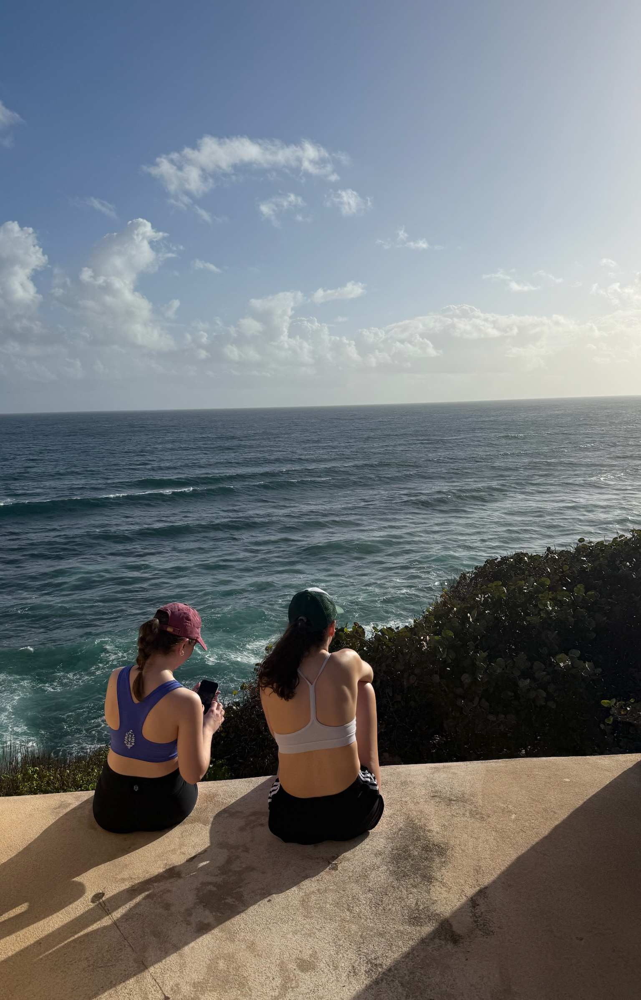

Hobbies are a super important part of my life, they give me goals and activities that keep me motivated outside of school and work. My hobbies include travelling, cooking, running, as well as reading! Travelling is huge part of my life and is a major motivator to work hard, so that I can enjoy trips and see new places. My hobby of running has merged with travelling a lot as I find it to be a great way to see so much of a place at once. I really enjoy going for leisurely runs and doing some sightseeing in the early morning. I also really enjoy cooking, and have since I was quite young. After being in dorms, and now an apartment with a kitchen, I definitely like to take advantage of being able to cook. My roommates and I often cook for each other, and one of my roommates is a baker, and so we always have something yummy in the house. Lastly, this year I've made it a goal of mine to prioritize reading. I try to read before bed, because I enjoy it and it is also nice to have some time without a screen before going to bed. I am currently reading the Handmaids Tale.